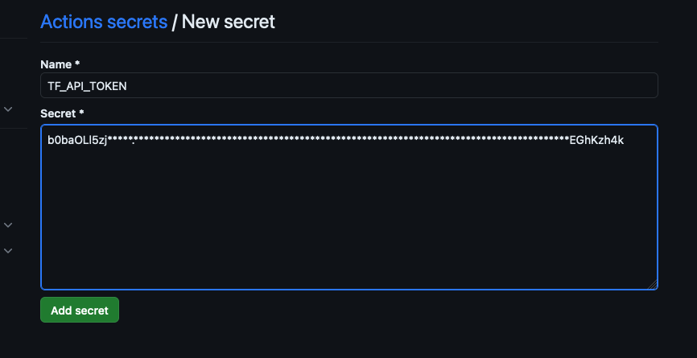
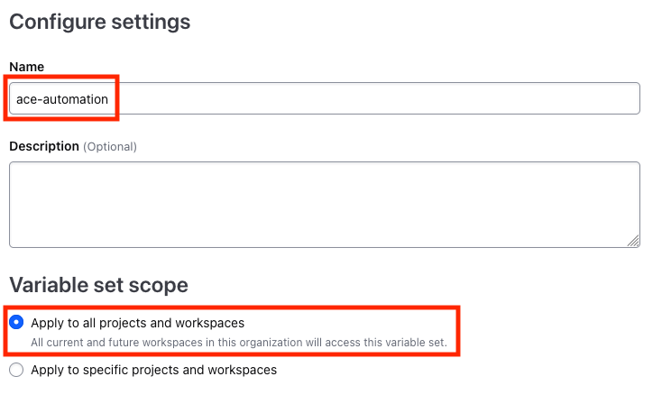

Initial Setup#
Ensure you’ve opened the prerequisite accounts for GitHub and HCP Terraform if you do not already have them.
Before launching the course, the following instructions will guide you through configuring both accounts to work in conjunction with the labs.
HCP Terraform (formerly Terraform Cloud)#
Let’s begin by setting up HCP Terraform and creating an organization to be used with the lab automation.
Create Organization - New HCP Terraform Users#
If you already have a HCP Terraform account your can skip this section.
After signing up and confirming your email, first-time users of HCP Terraform should click Create Organization.
Then, on the next page, select the Personal option, specify a unique Terraform organization name and click Create organization. Your email address will be pre-filled with the one you used when signing up for your HCP Terraform account.

Create Organization - Existing HCP Terraform Users#
Existing HCP Terraform users could use an existing organization. If you’d like to segregate this course into its own org, click this link to create a new organization.
Then, on the next page, select the Personal option, specify a unique Terraform organization name and click Create organization. Your email address will be pre-filled with the one you used when signing up for your HCP Terraform account.
Create API Token#
Next, we’ll create an API token that GitHub Actions can use to execute terraform on your behalf.
Go to Account settings by pulling the dropdown on your account avatar at the top of the left-hand nav.
Then, in the left-hand nav, click Tokens and Create API token
Add a description and expiration and click Generate token
Copy the resulting token and save it somewhere secure. You’ll need it again shortly for the GitHub setup.
We’ll stop here with the HCP Terraform configuration and continue in a later step after setting up your GitHub account.
GitHub#
Next, lets create a working copy of the the code in your GitHub account to be used for the course and configure it with your personalizations.
Fork the ACE Automation repository#
Login into your GitHub account and navigate to the ACE Automation repository.
In the upper right corner, click on the Fork dropdown and click on Create a new fork.
This will create a remote repository (aka repo) of the lab code in your own GitHub account. Ensure you’re targeting the correct Owner, then click Create fork.
You know have your own repository containing the course code.
Personalize the code for your accounts#
There are several files that we need to update with the HCP Terraform organization that you created earlier.
In your browser, navigated to the forked ace-automation repository in your own GitHub account, enter web editor mode by pressing the period (.) key on your keyboard.
Be sure you’re on the ace-automation repo in your own GitHub account (not the AviatrixSystems account).
You should now see the repository in a Visual Studio Code-style editor.
Navigate to dcf/versions.tf and uncomment the following line by removing the # character and the following space character (so the line aligns with the one above it).
# organization = "<replace-with-your-Terraform-Cloud-organization-and-uncomment>"
It should look similar to the following with the name of your HCP Terraform organization.
Next, make exactly the same edit to:
lab1/versions.tflab3/versions.tflab3/main.tf
Once you’ve made the edits to all three files, click on the merge icon (there should be a blue 4 icon superimposed on it).
Then, type a meaningful commit message and click Commit & Push
Your updates have now been saved to the main branch of the repository.
Configure the HCP Terraform token#
Navigate out of the web editor by clicking on the hamburger icon in the top of the left-hand nav and click Go to Repository.
For the repository (not the user), navigate to Settings > Secrets and variables > Actions.
Create a New repository secret named TF_API_TOKEN by clicking New repository secret, setting the Terraform Cloud API token you created and saved earlier as the secret value.

Now your github repository can securely control your HCP Terraform workspace via its api.
Enable GitHub Actions#
The final repository configuration is to enable GitHub Actions.
Click on the Actions button in the horizontal nav and click I understand my workflows, go ahead and enable them.
This completes the pre-course GitHub setup.
HCP Terraform (continued)#
Back to HCP Terraform, we’ll configure several workspaces for the course which will also grant permission for HCP Terraform to access your Github repository.
Create workspaces#
We will now configure three workspaces for the course.
Navigate to the Workspaces section for your Organization and create a the first workspace by clicking Create a Workspace.
Select Version Control Workflow.
Under Connect to a version control provider, select GitHub App
Under Choose a repository, select your GitHub organization (your github username). If it’s not in the dropdown, choose Add another organization. A pop-up window will appear to Install Terraform Cloud. If you do not see this window, you may need to disable your browser Ad Blocker.
Select your org (username) and choose Only select repositories, choose ace-automation, and click Install
Authorize HCP Terraform by authenticating with GitHub.
The repository is now added. Click on it to configure settings.
Set the Workspace Name to ace-automation-lab1
Click Advanced options and under Workspace Settings, set the Terraform Working Directory to lab1.
Under Pull Requests, uncheck Automatic speculative plans
Scroll to the bottom of the page and click Create.
The workspace will autodetect the variables in the code and prompt you to enter them. Click Skip this step as we’ll configure them globally in a subsequent step.
From there, navigate back to the workspaces list by clicking on Workspaces in the left-hand nav.
Create the second workspace, by clicking the New dropdown in the top right of the page and selecting Workspace.
The second workspace is similar to the first.
Use the same project used for the first workspace, select Version Control Workflow, and the ace-automation repository.
The Workspace Name should be ace-automation-lab3. Be sure to click Advanced options and set the Working Directory to lab3
Skip any prompt to configure variables and Continue to workspace overview.
From there, navigate back to the workspaces list by clicking on Workspaces in the left-hand nav.
The final workspace is a bit different than the first two.
Create the third workspace, by clicking the New dropdown in the top right of the page and selecting Workspace. Again, putting it into the same Project as you had for the previous workspaces.
This time, select API-Driven workflow.
The Workspace Name should be ace-automation-dcf. There is no advanced option(s) for this workspace. Click Create.

Configure Variable Set#
Next, we’ll create a variable set to be used with all the workspaces. Navigate back to the workspace list and click Settings. Under Organization Settings, click Variable Sets.
Then, click Create variable set.
Set the Name to ace-automation and choose Apply to all projects and workspaces

Next, we’re going to add 4 Terraform variables to the set. Click + Add variable and the values from the following table.
Key |
Value |
Sensitive |
|---|---|---|
controller_ip |
placeholder |
no |
password |
placeholder |
yes |
us_east_1_vpc_id |
placeholder |
no |
us_west_2_vpc_id |
placeholder |
no |
Note We’re only adding placeholder values at this time. We’ll return later in the course to configure actual values.
Once all 4 variables have been added to the set, click Create variable set.
This concludes the pre-course setup for GitHub and HCP Terraform.